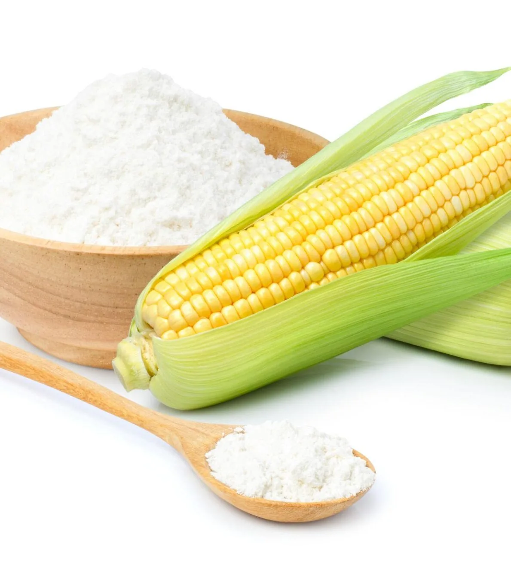

01
material publicado, sin SKU
Opciones con fécula de maíz
El sitio presenta esta materia prima de origen vegetal y solicita evaluar composición, uso y disposición.

Imagen publicada por Natural Packing Costa RicaEvalúa volumen, medidas y disposición del material antes de elegir una solución de empaque.
Guarda tus referencias en una lista local y prepara el siguiente paso. Precios, variantes y existencias se revisan en cada ficha oficial.
El sitio presenta esta materia prima de origen vegetal y solicita evaluar composición, uso y disposición.
Uso, contenido, medidas, composición y disposición deben revisarse con la empresa. No se inventan referencias que el catálogo público no especifica.
Preparar mi volumen →Ofrece bolsas ecológicas y recoge solicitudes con empresa, tipo de bolsa y mensaje.
Prueba cantidades y condiciones. Obtén un resumen local para revisar antes de hablar con la empresa.
Datos revisados el 3 de noviembre de 2026. La empresa confirma cualquier condición vigente.
El sitio presenta esta materia prima de origen vegetal y solicita evaluar composición, uso y disposición.
La web explica opciones de empaque elaboradas con fécula de maíz.
No se verificaron tres fichas comprables; esta muestra no inventa referencias ni precios.
La página solicita empresa, tipo de bolsa y mensaje.
Su página de productos invita a consultar opciones según especificaciones disponibles.
Publica Desamparados, San José, Costa Rica.
Sí. La explicación del material indica que biodegradación y compostaje dependen de composición y condiciones.
Su página enumera uso, dimensiones, desempeño, presentación y volumen.